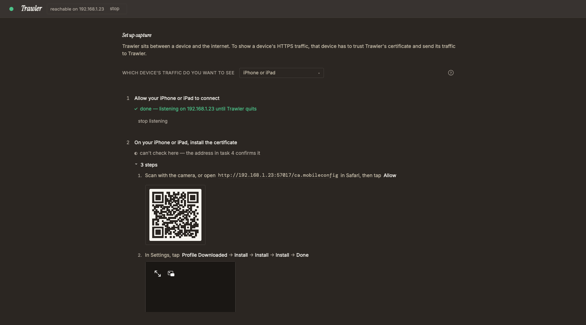
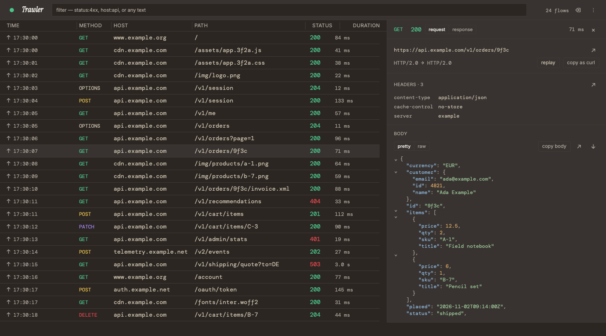
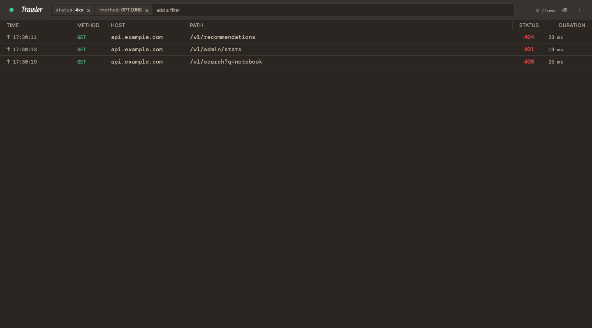
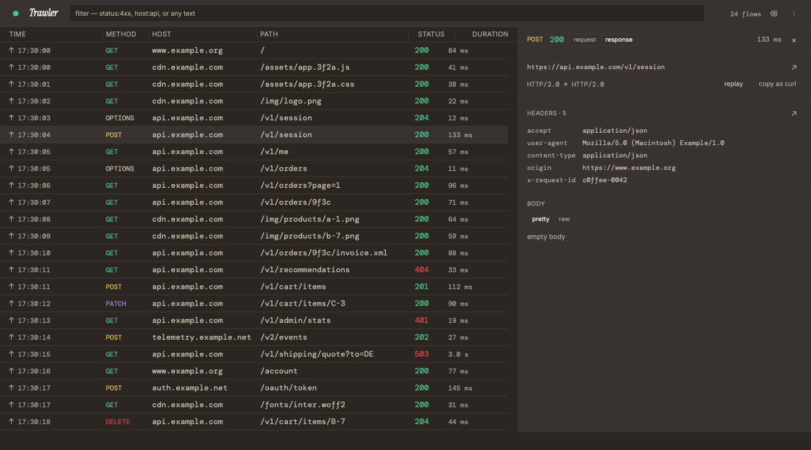
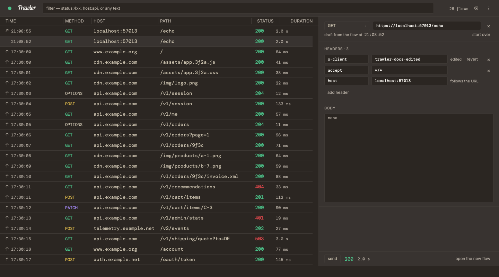
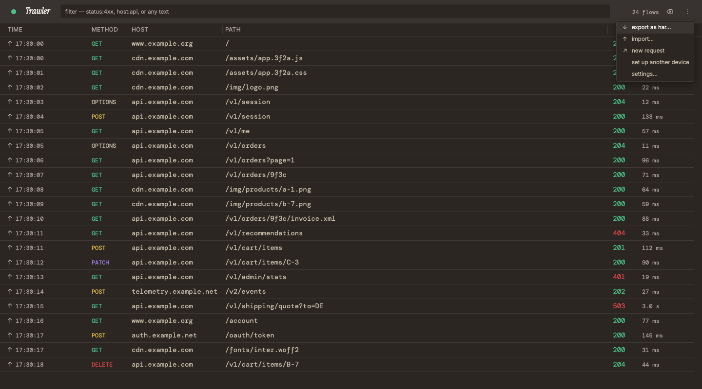

Your phone and simulators, from one screen.
Capture an iPhone, an Android phone, the iOS Simulator or the Android emulator. Pick the device and the setup screen shows each step.

The page first: a bold, dark, product-forward launch page with a live request log as its hero, benefit stories with the real app framed as windows, an amber glow, quiet reveals. The spec W2 and W3 build from sits folded below it.
Real HTML and CSS rendered in isolation, one iframe per frame (the source is in Markup), so 1440 px and 390 px reflow as a browser would. Reload the doc to see the request log play again: six rows arrive one after another in under four seconds, then it holds still.
1440 px · dark · no script
390 px · dark · no script
390 px · light · no script · focus on Download for…
390 px · dark · reduced motion · the hero's still strip
1440 px · light · no script · the hero, the privacy band and the footer stay dark in both themes
| # | Pick | Was open as | In this doc now |
|---|---|---|---|
| P1 | request log = V1: six rows in the app's status colours | V1 (recommended) or V2 (four rows, ink only) | V2, its frames and its .log.quiet rules are gone; the page carries V1 and its reduced-motion still strip; C15 and Motion name only V1 |
| P2 | screenshots as re-encoded PNG, with the png crate xtask already has | re-encoded PNG (recommended) or lossless WebP | first picked WebP on round 3's −81 %; reversed the same day after the shippable pure-Rust encoder measured −30 %. Assets: PNG shots re-encoded by W2, weights re-measured; no new crate |
| Round 2 read as a technical doc because… | Round 3 | Owner's pick (via the router) |
|---|---|---|
| the page itself was quiet: regular-weight headings, no colour, no motion, a bullet list | 700-weight headline up to 88 px on a near-black band, an amber glow, benefit headings that say what you get | R1 · bold product-forward |
| the hero was a static screenshot under the text | the hero shows the product working: a request log that fills in row by row, in pure CSS; the real screenshot follows as the first section, framed as a window | R2 · a moving request log |
| nothing moved, by design | soft reveals as sections scroll in, a gentle lift on hover; all of it off under reduced motion | R3 · subtle motion |
| features were seven README bullets in two columns | five stories, each a benefit heading, one plain sentence and its own screenshot, alternating sides; three tiles for the rest | R4 · benefit stories |
| the doc opened with rulings and tables | the doc opens with the page; the spec is folded below | brief |
Kept: the README pitch as the headline, word for word (Q5); the headline and the download button first (D1); a card per OS with detection by the same site.js (D2); every claim traceable to README, GUIDE, PRIVACY or CHANGELOG (Copy); the CSP, no external request, no web font, the page complete with the script off.
Everything W2 and W3 build from. Each block opens on a click.
| # | Ruling | Who · when | In this design |
|---|---|---|---|
| Q1 | lesslucifer.github.io/Trawler | owner · 2026-11-08 (plan v2) | canonical, OG, 404 paths |
| Q3 | build-time release read + always-present releases/latest link | same | C12, C34, C38, C45; detection reads the built page, never the network |
| Q4 | no analytics | same | CSP, C31, the site.js scan |
| Q5 | README pitch exactly | same | C1, C8, C46 |
| Q6 | link out to blob/main/GUIDE.md | same | C6, C11, C35, C41–C44, C47 |
| Q7 | English only | same | lang="en" |
| Q9 | system fonts + outlined wordmark | same | system stacks only; wordmark-dark.png in the top bar and the footer |
| Q13 | yes: site/ is a code path (the site has a script) | owner · 2026-11-08 (W1 round 2, with D2) | W2 edits is_code; the docs/workflow.html T1 line is W5's owner mr commit |
| D1 | centred stack, headline + download first | owner · W1 round 2 | kept: eyebrow, pitch, sub, buttons, centred; the hero visual under them is now the request log (R2), s1 moves to the first section |
| D2 | a card per OS as the no-script base + OS detection by one same-origin site.js; an “Other downloads” link stays visible | same | kept unchanged: same script, same page contract (Detection); the cards are restyled |
| D3 | bullets + More screens | same | retold as R4: the bullets become story headings and sentences, the screens become each story's window; no bullet list remains |
| R1 | bold product-forward: dark, big headline, the app framed like a real window, a glowing amber accent | owner · 2026-11-08 (W1 round 3, via the router) | the hero, privacy band and footer are dark in both themes; amber only as glow (see the DEC-89 row) |
| R2 | hero visual = a moving request log, CSS only, still under reduced motion; the framed screenshot right after as the first benefit | same | .log in #t-index, V1 (P1) |
| R3 | subtle motion: soft reveals, gentle hover; the log is the one lively element; always off under reduced motion | same | Motion |
| R4 | benefit stories: what you get, then one plain sentence; every line traceable; the tagline stays the README pitch | same | Copy C16–C27 |
| DEC-89 rule 6 | “amber is a brand colour, never a UI colour” | R1 asks for an amber glow | amber appears only as decoration of the brand surface (the glows, the arriving row's edge, the picked card's halo), the way the social card and installer art use it; never text, never a state, never a control's fill. W5 records the site as a brand surface in a DEC-89 amendment (owner mr commit) |
| P1 | request log = V1, six rows with the app's status colours; V2 dropped | owner · 2026-11-08 (W1 round 4, via the router) | C15, Motion, #t-index; no variation left in site.css |
| P2 | screenshots as re-encoded PNG with the png crate xtask already has; no new crate | owner · 2026-11-08 (W1 round 4, via the router): WebP first, reversed the same day when the shippable encoder measured −30 %, not −81 % | Assets; og:image stays social-preview.png; CSP unchanged |
“frame” = hand-written in site/, held by the deny-list test; “filled” = taken at build from the file named. Every frame claim cites the fact it restates. site.js adds no string of its own.
| # | Where | String | Source |
|---|---|---|---|
| C1 | <title> | Trawler — See every HTTP and HTTPS request your apps make. | frame “Trawler — ” + filled pitch (Q5) |
| C2 | meta description, og:description | the pitch · the sub line | filled README |
| C3 | og:title, og:site_name | Trawler | frame |
| C4 | skip link | Skip to download | frame |
| C5 | wordmark alt | Trawler | frame (README's alt) |
| C6 | top bar | Features · Privacy · Guide · Download | frame · #features, #privacy, GUIDE.md, #download; under 720 px only Download shows |
| C7 | eyebrow | Free and open source · macOS · Windows · Linux | frame · README sub line “A free, open-source debugging proxy for macOS, Windows and Linux” |
| C8 | h1 | See every HTTP and HTTPS request your apps make. | filled README pitch (Q5) |
| C9 | sub line | A free, open-source debugging proxy for macOS, Windows and Linux. Capture this machine, your phone or a simulator, read each request and send it again — everything stays on your machine. | filled README |
| C10 | primary button | Download for ‹macOS · Windows · Linux›; detected: Download for ‹the picked card's h3› | frame (README's link words); the script copies the h3 |
| C11 | second button | Read the guide | frame · GUIDE.md |
| C12 | under the buttons | Version ‹0.1.0› · MIT licence · no account | filled version · README FAQ “MIT licence, no paid tier, no account” |
| C13 | detected only | ‹file name› · Other systems · Other downloads | frame words; file name copied from the picked link |
| C14 | detected only | the picked card's C41, C42 or C43, with its link | copied by the script |
| C15 | request log | window title “Trawler”; columns Method · Host · Path · Status · Time; six rows: GET www.example.org / 200 84 ms · POST api.example.com /v1/session 200 133 ms · GET api.example.com /v1/orders/9f3c 200 71 ms · GET api.example.com /v1/recommendations 404 33 ms · PATCH api.example.com /v1/cart/items/C-3 200 90 ms · DELETE api.example.com /v1/cart/items/B-7 204 44 ms; aria-label “An example of Trawler's request list: six requests to example hosts” | frame · rows copied from the s1/s4 screenshot fixture (reserved example.* hosts); column names from the app's list |
| C16 | #features h2 | Every request your apps make, in one list. | frame · GUIDE.md intro “Trawler shows every HTTP and HTTPS request your apps make” |
| C17 | under it | Method, host, path, status and time for each one. Click a request and its headers and body open beside the list — HTTPS too, once your system trusts Trawler's certificate. | frame · the s1 columns; GUIDE#inspect-a-request “The inspector opens beside the list”; README First run (set up trusts the certificate) |
| C18 | s1 alt | Trawler's main window: the list of captured requests, one JSON response open in the inspector | filled README |
| C19 | stories kicker h2 | What you can do | filled README heading |
| C20 | story 1 | Your phone and simulators, from one screen. Capture an iPhone, an Android phone, the iOS Simulator or the Android emulator. Pick the device and the setup screen shows each step. | README bullet 2; GUIDE#capture-another-device; s6 · alt filled from GUIDE |
| C21 | story 2 | Find the failing request. Filter by status, method, host or any text: status:4xx keeps the failures, -method:OPTIONS leaves those requests out. | README bullet 3; GUIDE#filter-the-list (chip table); s3 · alt filled from README |
| C22 | story 3 | Read every header and every body. Headers, timing and bodies, with viewers for JSON, XML, HTML, forms and more. Copy any request as a curl command. | README bullet 4; GUIDE#inspect-a-request (copy as curl); s4 · alt filled from GUIDE |
| C23 | story 4 | Change it. Send it again. Replay a request with its method, address, a header or the body edited, or write one from scratch. The answer shows beside it. | README bullet 5; GUIDE#send-a-request-again (steps 2–3); s5 · alt filled from README |
| C24 | story 5 | Keep what you captured. Captured requests live in memory and are gone when you quit. Export them to HAR, and open a HAR file or a curl command later. | README bullet 6; GUIDE#export-and-import; s10 · alt filled from GUIDE |
| C25 | tile | Capture with the window closed. Trawler stays in the menu bar or the system tray and keeps capturing. | README bullet 7; GUIDE#keep-capturing |
| C26 | tile | Updates from inside the app. Trawler asks before installing, and installs only a release signed by the project. | README FAQ “How do updates work?”; CHANGELOG 0.1.0 “Every update is signed” |
| C27 | tile | Native on macOS, Windows and Linux. MIT licence, no paid tier, no account. | README FAQ (“native on macOS, Windows and Linux”; “Is it free?”) |
| C28 | #privacy h2 + lead | Trawler keeps your traffic on your machine. · It has no account, no analytics, no crash reporting and no telemetry. | filled PRIVACY.md lead, split after its first sentence |
| C29 | three tiles | In memory, gone when you quit. Captured requests stay in memory on your machine. Export to HAR to keep them. · Two requests of its own. An update check to GitHub when it opens, at most once a day, which you can turn off; and the setup screen's test request to example.com when you click it. · Only this machine, until you allow another. Trawler listens only on this machine until you allow another device. | README Privacy bullets 1–2; PRIVACY.md “Other devices” row |
| C30 | the limit, where it bites | Trawler's certificate key is stored unencrypted in your app data folder. Remove the certificate when you stop using Trawler. | README Privacy bullet 3 (DEC-91 rule 1: limits stated where they bite) |
| C31 | this site | This site keeps the same promise: no analytics, no cookies, no tracking, and nothing loaded from any other site. One small script puts your system's download first; it reads only what your browser reports about your system, and stores and sends nothing. GitHub hosts this page and sees your IP address, as any web host does. | frame (round 2's C31) · backed by W2's CSP, no-external and scan tests; PRIVACY.md “GitHub sees your IP address” |
| C32 | link | What leaves your machine and what stays | frame · PRIVACY.md |
| C33 | #download h2 | Download Trawler | frame |
| C34 | under it | Version ‹0.1.0› · ‹2026-11-07› · release notes | frame words, filled values |
| C35 | the honest line | Trawler isn't signed with a paid certificate, so macOS and Windows warn that they don't know the publisher the first time you open it. Each card says what to click. Step by step | README “First open on macOS and Windows” + FAQ · GUIDE.md#install |
| C36 | card h3 | macOS · Windows · Linux | frame |
| C37 | macOS requirement | macOS 11 or later · Apple Silicon and Intel | frame (= README install row) |
| C38 | h4 · file links · “or” | x64 · arm64 · Trawler_0.1.0_universal.dmg … · or | frame · filled release asset names |
| C39 | Windows hint | Not sure which? Settings → System → About → System type. | frame (plan) |
| C40 | under the picked card's h3, detected only | Your system | frame (in every card, hidden) |
| C41 | macOS first open | First open: Privacy & Security → Open Anyway. Step by step | frame (= README) · GUIDE.md#install |
| C42 | Windows first open | First open: More info → Run anyway. Step by step | frame (= README) · GUIDE.md#install |
| C43 | Linux first open | No prompt on first open. Install commands | frame (= README) · GUIDE.md#install |
| C44 | under the cards | Check your download: SHA256SUMS · how to check | frame · the release asset, GUIDE.md#check-your-download |
| C45 | always present | Other downloads: every file of the latest release, on GitHub | frame · releases/latest (Q3, D2) |
| C46 | footer | the pitch · MIT © 2026 Vu Luu | filled README pitch · README “Contributing · Security · Licence” |
| C47 | footer nav “Project files” | Guide · Privacy · Changelog · Contributing · Security · Licence · Report an issue · Source code | frame · blob/main files, issues/new/choose, the repo |
| C48 | 404 | <title> Page not found — Trawler · h1 This page doesn't exist. · Go to the Trawler home page | frame |
Left out on purpose: “Nothing leaves your machine” (false: the update check goes to GitHub and captured requests go where they were going; PRIVACY.md says “keeps your traffic on your machine”, so the page says that); “in seconds” and any other speed, count or comparison (nothing measures it); testimonials, logos, other tools' names (DEC-91 rule 2).
| Element | Motion | When | Reduced motion |
|---|---|---|---|
| Hero text | fade + rise 16 px, 0.7 s, staggered 0–0.26 s | once, on load | none: shown at rest |
| Request log rows | each row fades in from 8 px above with a 3 px amber edge that fades out; rows start 0.55 s apart from 0.5 s | once, on load; ends at 3.95 s, so no pause control is owed (WCAG 2.2.2: under 5 s) | none: all rows shown, no edge (frame above) |
| Section content (the s1 window, stories, tiles, privacy lead, download cards) | fade + rise as it enters the viewport, tied to scroll (animation-timeline: view()) | browsers with scroll timelines; others show it at rest | none |
| Buttons · story windows | lift 1–2 px on hover; the primary button gains an amber halo; 0.15–0.3 s | pointer hover | none |
| Anything else | nothing: no loop, no infinite, no smooth scroll, no video | — | |
Every animation and transition in site.css sits inside @media (prefers-reduced-motion: no-preference), and every rest state is the visible one, so a browser that runs no animation shows the whole page. W2 asserts both.
A tiny same-origin script, no network request, no tracking, no storage. It reads what the browser reports (navigator.userAgentData.platform, navigator.platform, navigator.userAgent, navigator.maxTouchPoints, and on Chromium the one async hint architecture), picks one download block, and changes nothing else.
| System | What a browser can tell | Primary (the hero button, first in the card) | Where the others sit |
|---|---|---|---|
| macOS | That it is a Mac; not Apple Silicon from Intel (Safari reports MacIntel on both) | Trawler_‹v›_universal.dmg: one file serves both chips | none; “macOS 11 or later · Apple Silicon and Intel” stays visible |
| Windows | That it is Windows. Arch only on Chromium, through getHighEntropyValues(['architecture']) (async, absent in Firefox and Safari) | ‹v›_x64-setup.exe at once; promoted to ‹v›_arm64-setup.exe only when the hint answers "arm" | the other arch right below in the same card; each .msi on its “or” line; the “Not sure which?” hint |
| Linux | That it is Linux, and arm64 when the UA or navigator.platform says aarch64/arm64 (or the hint says "arm"); never the distribution | ‹v›_amd64.AppImage / ‹v›_aarch64.AppImage: any distribution, no password to install or update | .deb and .rpm on the “or” line; “Install commands” → GUIDE#install |
| Phone, tablet, ChromeOS, anything else | Android, iPhone, iPad (also MacIntel with touch points), CrOS, userAgentData.mobile, an empty platform | unknown: the page stays as with the script off | |
| State | Hero button | Hero line under it | Download cards |
|---|---|---|---|
| no script · unknown | Download for macOS · Windows · Linux → #download | hidden | macOS · Windows · Linux; x64 before arm64; no highlight |
macos · windows-x64 · windows-arm64 · linux-x64 · linux-arm64 | Download for ‹system› → that file | the file name · Other systems · Other downloads, then the card's first-open line | the picked card first, a 2 px ink border, an amber halo and “Your system”; the picked arch block first inside it |
The reorder moves DOM nodes, not CSS order, so tab order and reading order follow what is seen. A missing dl-* id makes show return without a change.
macos · 390 · light
windows-x64 · 390 · dark
windows-arm64 (hint) · 390 · light
linux-x64 · 390 · dark
linux-arm64 · 390 · light
windows-x64 · 1440 · light
The reference W3 copies (1,649 bytes, unchanged). A classic defer script: module scripts never run on a file:// origin. It writes only href, textContent, hidden, one class and node order. The frames run exactly this text.
function detect(nav) {
const ua = (nav.userAgent || '') + ' ' + (nav.platform || '');
const data = nav.userAgentData;
const os = ((data && data.platform) || nav.platform || '').toLowerCase();
if ((data && data.mobile) || /android|iphone|ipad|ipod|cros/i.test(ua)) return null;
if (os.includes('mac')) return nav.maxTouchPoints > 1 ? null : 'macos';
const arch = /aarch64|arm64|armv8/i.test(ua) ? 'arm64' : 'x64';
if (os.includes('win')) return 'windows-' + arch;
if (os.includes('linux')) return 'linux-' + arch;
return null;
}
function show(key) {
const block = document.getElementById('dl-' + key);
if (!block) return;
const card = block.closest('.card');
const first = card.querySelector('.arch');
const file = block.querySelector('a.file');
card.parentElement.prepend(card);
if (first !== block) first.before(block);
card.classList.add('mine');
card.querySelector('.mine-tag').hidden = false;
document.getElementById('get').href = file.href;
document.getElementById('get-os').textContent = card.querySelector('h3').textContent;
document.getElementById('pick-file').textContent = file.textContent;
document.getElementById('pick-first').replaceChildren(...card.querySelector('.first').cloneNode(true).childNodes);
document.getElementById('pick').hidden = false;
}
const picked = detect(navigator);
if (picked) {
show(picked);
const data = navigator.userAgentData;
if (picked !== 'macos' && data && data.getHighEntropyValues) {
data.getHighEntropyValues(['architecture']).then((hint) => {
if (hint.architecture === 'arm') show(picked.replace('x64', 'arm64'));
}, () => {});
}
}The page's side of the contract: blocks dl-macos, dl-windows-x64, dl-windows-arm64, dl-linux-x64, dl-linux-arm64 (class arch, first link a.file) inside a .card with an h3, a hidden .mine-tag and a .first line; the hero's #get / #get-os and the hidden #pick with #pick-file and #pick-first. Only download cards carry the class card; feature and privacy boxes are tile.
WCAG 2 ratios against the surface each text sits on; W2's contrast test recomputes them from site.css.
| Token | Use | Light | Dark | .night bands (both themes) |
|---|---|---|---|---|
--bg | surface | #f4f1ea paper | #2b2622 canvas | #1b1916 (DEC-89 social canvas) |
--ink | headings, links, primary button fill, focus ring, picked card border | #1f1c19 · 15.0 | #f7f5f0 · 13.7 | #f7f5f0 · 16.1 |
--body | body text | #3d3833 · 10.3 (9.4 on tiles) | #c9c0ad · 8.3 (6.9 on tiles) | #c9c0ad · 9.7 (8.3 on tiles) |
--mute | eyebrow, labels, meta, captions | #5f5850 · 6.2 (5.7 on tiles) | #aea69c · 6.2 (5.2 on tiles) | #aea69c · 7.3 (6.2 on tiles) |
--raise | tiles, cards | #ece7dc | #383330 canvas-soft | #2b2622 |
--line | borders (decoration) | #d6cfc2 | #3f3a36 hairline | #3f3a36 |
--glow | amber decoration only | #e0a43a at 22 % | #e0a43a at 30 % | |
Request log (fixed, on #141210) | Value | Ratio |
|---|---|---|
row text · column labels · title bar text (on #383330) | #c9c0ad · #aea69c · #f7f5f0 | 10.4 · 7.8 · 11.4 |
| ok (GET, 2xx) · create (POST) · amend (PATCH) · warn (DELETE, 4xx) | the app's #4cc38a · #e5bf4d · #a78bfa · #e5484d | 8.4 · 10.5 · 6.8 · 4.8 |
The log's body is #141210, not the app's canvas, because the app's warn reads 3.8:1 on #2b2622; on #141210 every status passes 4.5:1. The picked card is marked by border weight and a word, never by colour alone.
| Item | Spec |
|---|---|
| Structure | lang="en"; landmarks header (top bar), main, footer; one h1 (the pitch); h2 per section, h3 per story, tile and OS, h4 per arch |
| Request log | a figure with role="img" and a label (C15): a screen reader hears one sentence, not 36 cells; it carries no information the page needs |
| Skip link · focus | “Skip to download” first; :focus-visible → 2 px --ink outline, 3 px offset, on every link and button, light or dark band |
| Motion | Motion: everything off under reduced motion; nothing loops; the log ends under 5 s |
| Targets | buttons at least 44 px tall (48 px for the hero pair) |
| Images | alt from README/GUIDE; width/height on each; every screenshot loading="lazy" (none is in the first view) |
| Narrow screens | written phone-first: one column, the log drops Host and Time, file names wrap anywhere; nothing scrolls sideways at 320 px |
| Published as | Copied from | Bytes | Used by · load |
|---|---|---|---|
index.html, 404.html, site.css | site/ (W3), filled by W2 | ≤ 40 KB together (the doc's templates: ≈ 26 KB) | blocking (CSS) |
site.js | site/, as is | 1,649 (cap 3,072) | index · defer |
favicon.svg | ui/public/favicon.svg | 601 | both pages |
wordmark-dark.png | ui/src-tauri/icons/brand/ (1480×336, shown at 120×27) | 23,228 | top bar, footer, 404 · eager; wordmark-light.png is no longer used: every wordmark sits on a dark band |
s1, s6, s3, s4, s5, s10 (.png, same names) | .github/screenshots/ (cargo xtask ui screenshots, 1440×800), re-encoded by W2's build (P2) | 219,795 · 69,281 · 37,703 · 199,063 · 189,310 · 172,632 = 887,784 | first section + five stories · loading="lazy" |
social-preview.png | ui/src-tauri/icons/brand/ | 47,651 | og:image only |
First view ≈ 66 KB (≤ 40 + 1.6 + 23 + 0.6): no screenshot is above the fold. The whole page ≈ 0.94 MB (round 3's scratch build 15,992 + 10,086 + 1,648 + 601 + 23,228, plus the six re-encoded shots), down from ≈ 1.15 MB with the committed PNGs; the shots are 95 % of it.
| The six shots (P2), measured this round | Total (B) | Pixels |
|---|---|---|
| as committed: RGBA PNG, every pixel opaque | 1,094,511 | — |
re-encoded with png 0.18.1 (xtask's): alpha dropped (RGB 8-bit), Compression::High, Filter::Adaptive | 887,784 (−19 %) | identical (decoded and compared) |
The committed PNGs stay as they are (README and GUIDE show them); W2 writes the re-encoded copies into target/site/ each build and tests that each decodes to its source's pixels.
| Tag | Value |
|---|---|
| CSP, index | default-src 'none'; img-src 'self'; style-src 'self'; script-src 'self'; base-uri 'none'; form-action 'none' (meta). No inline style attribute or <style> anywhere: every animation delay is a selector in site.css |
| CSP, 404 | default-src 'none'; img-src 'self'; style-src 'self'; base-uri 'none'; form-action 'none': no script |
| script | <script src="site.js" defer></script>, last in the index <head>; the only script on the site |
| referrer · colour scheme | no-referrer · <meta name="color-scheme" content="light dark"> |
canonical · og:url | https://lesslucifer.github.io/Trawler/ |
| OG / Twitter | og:type website, C2, C3, og:image = base + social-preview.png 1280×640 (PNG), twitter:card summary_large_image |
| 404 | favicon, CSS and wordmark by absolute path /Trawler/…; <meta name="robots" content="noindex"> |
| Check | Refused when | Who |
|---|---|---|
site.js network | any of fetch, XMLHttpRequest, WebSocket, WebTransport, sendBeacon, EventSource, RTCPeerConnection, import(, Worker, serviceWorker, :// | W2 scan |
site.js code from strings | eval, Function(, string timers, innerHTML, outerHTML, insertAdjacentHTML, document.write | W2 scan |
site.js storage, side-effect requests, size | document.cookie, cookieStore, localStorage, sessionStorage, indexedDB, caches; createElement, new Image, .src, srcset, location, open(; over 3,072 bytes | W2 scan |
| Pages | anything but one <script src="site.js" defer> in the index; an inline script, <style>, style= or on…=; a script in the 404; a CSP that differs from Head | W2 |
| Motion | an animation, transition or animation-timeline outside @media (prefers-reduced-motion: no-preference); infinite; scroll-behavior: smooth; the last log row's delay + duration over 5 s | W2, over site.css |
| Contrast | any text pair in Colour under 4.5:1, the log's included | W2 |
| Behaviour | site/site.test.mjs: node:test + node:vm, the 14 fixture cases of round 2 (Safari/Chrome Mac, iPad desktop site, Edge x64/Arm, hint refused, Firefox Windows/Linux x64/arm64, Chrome Linux arm64, Android, iPhone, ChromeOS, nothing reported), asserting the dl-* ids asked | W3 builds, W2's check runs it |
The scan is a tripwire; the CSP is the enforcement (the browser refuses every connection and every foreign image).
Dark in both themes, like the hero. Its links and assets are absolute under /Trawler/ (the mock links the full URL). No script.
1440 px
390 px
The source of every frame sits in this file after </main>: #t-index and #t-404 are the two pages, #t-site-css is site.css, #t-mock-css only forces a theme, crops sections and stills motion for the frames. W3 copies the pages, site.css and site.js, adds the script tag, turns each data-fill into W2's marker, and points each screenshot at its re-encoded copy in target/site/.
| Element | Filled from (W2) |
|---|---|
.hero h1, footer pitch, .hero .sub | README.md: the <h3> pitch, the paragraph under it |
.facts-line version, #download .meta | release JSON tag_name, published_at, html_url |
#download file links, SHA256SUMS | release JSON assets[].name per kind; releases/download/v‹v›/‹name› |
.stories h2 | README.md “What you can do” heading |
screenshot alt | README.md (s1, s3, s5) and GUIDE.md (s4, s6, s10) image alts |
#privacy h2 + .lead | PRIVACY.md lead paragraph, split after its first sentence |
| every GitHub link | links.rs base https://github.com/lesslucifer/Trawler/blob/main/‹file› |
Story and tile text is frame copy (held by the deny-list test and by a drift check W2 adds: each story's cited README bullet still exists word for word, so a README change flags the story that restates it).
| Builds | Who | Checked by |
|---|---|---|
site/index.html, 404.html, site.css, site.js from the templates and the listing, log V1 | W3 | W2's link, CSP/no-external, no-inline, motion, contrast, deny-list, kinds and scan tests; code review |
site/site.test.mjs | W3 | W2's site check |
is_code += site/; the scans; the shot re-encode (png crate); the story drift check | W2 | W2's own tests |
| Shots at 390 × 844 and 1440 × 900, light and dark, script off and on, and one with reduced motion | W3 | owner sign-off on W3 |
Not verified: Safari and Firefox rendering and a real phone (frames and shots checked in Chrome only); scroll-driven reveals in Safari (shipped in 26) and their absence in Firefox (content then shows at rest, by design); the detection on real Windows on Arm, Linux arm64, iPadOS and ChromeOS; that GitHub Pages sets no cookie (W4, live).
Free and open source · macOS · Windows · Linux
A free, open-source debugging proxy for macOS, Windows and Linux. Capture this machine, your phone or a simulator, read each request and send it again — everything stays on your machine.
Download for macOS · Windows · LinuxRead the guide
Version 0.1.0 · MIT licence · no account
Method, host, path, status and time for each one. Click a request and its headers and body open beside the list — HTTPS too, once your system trusts Trawler's certificate.

Capture an iPhone, an Android phone, the iOS Simulator or the Android emulator. Pick the device and the setup screen shows each step.

Filter by status, method, host or any text: status:4xx keeps the failures, -method:OPTIONS leaves those requests out.

Headers, timing and bodies, with viewers for JSON, XML, HTML, forms and more. Copy any request as a curl command.

Replay a request with its method, address, a header or the body edited, or write one from scratch. The answer shows beside it.

Captured requests live in memory and are gone when you quit. Export them to HAR, and open a HAR file or a curl command later.

Trawler stays in the menu bar or the system tray and keeps capturing.
Trawler asks before installing, and installs only a release signed by the project.
MIT licence, no paid tier, no account.
Privacy
It has no account, no analytics, no crash reporting and no telemetry.
Captured requests stay in memory on your machine. Export to HAR to keep them.
An update check to GitHub when it opens, at most once a day, which you can turn off; and the setup screen's test request to example.com when you click it.
Trawler listens only on this machine until you allow another device.
Trawler's certificate key is stored unencrypted in your app data folder. Remove the certificate when you stop using Trawler.
This site keeps the same promise: no analytics, no cookies, no tracking, and nothing loaded from any other site. One small script puts your system's download first; it reads only what your browser reports about your system, and stores and sends nothing. GitHub hosts this page and sees your IP address, as any web host does.
Trawler isn't signed with a paid certificate, so macOS and Windows warn that they don't know the publisher the first time you open it. Each card says what to click. Step by step
Your system
macOS 11 or later · Apple Silicon and Intel
First open: Privacy & Security → Open Anyway. Step by step
Your system
Not sure which? Settings → System → About → System type.
First open: More info → Run anyway. Step by step
Your system
No prompt on first open. Install commands
Check your download: SHA256SUMS · how to check
Other downloads: every file of the latest release, on GitHub